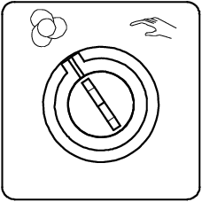

需要随时在生产过程中运行处理程序或 RAPID 程序时，可将系统置于自动模式下。
 | 危险 置于自动模式后，机器人会在没有任何警告的情况下开始运动。 请确保在更改操作模式前无人进入安全保护空间。 |
操作 | Information | |
1 | 将模式开关置于自动位。 一个模式更改对话框显示。 |  |
2 | 如果调试设置发生任何变化，对话框将通知相关变化及相关值是否将被重设。点击 Acknowledge（确认）。 | 相关值是否重设由主题Controller之Auto Condition Reset类型中的系统参数定义。 |
3 | 点击 确定 ，然后点击 如果切换回手动模式，对话框将自动关闭。 | |
4 | 系统是否已正常切换模式？ 如果是，恢复／启动处理程序或RAPID 程序。 如果否，请中止操作并排除故障。 | 有关如何启动程序的详情，请参阅 启动程序 。 |
 | 注意 如果您的系统使用分体式的操作员面板，则控制装置和指示灯的位置可能与本手册所述不同。如需了解详情，请联系工厂或查看单元文档。 控制装置和指示设备的外观和功能都是一样的。 |
只有当模式更改对话框关闭后，才可以手动或自动启动程序和机器人电机。
在自动模式下可以启动RAPID 程序，并能远程开启电机。也就是说，系统不会进入安全待机状态，并且机器人可随时开始运动。
有关系统配置的详情，请参阅工厂或车间的说明文档。
许多条件可在切换至自动模式时进行设置或重设，请参见自动条件重设和运行模式设置章节中的技术参考手册 - 系统参数。